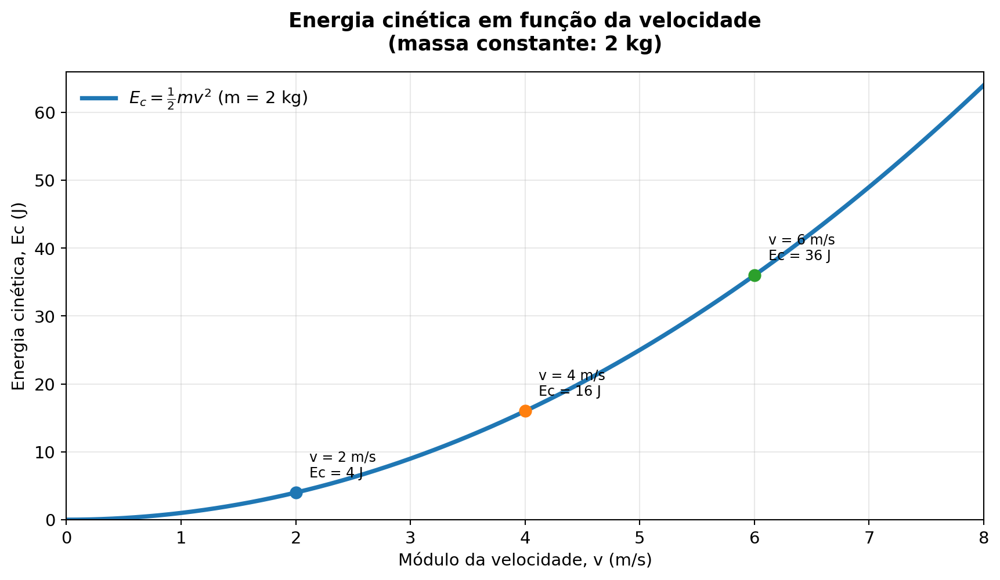
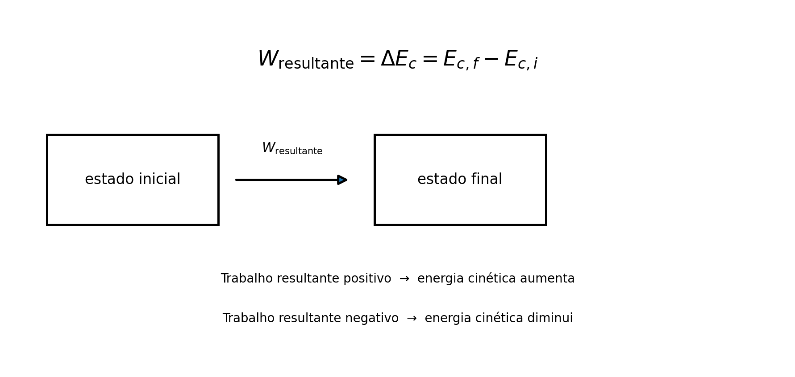

1º Ano | Aula 26: Energia Cinética e Teorema do Trabalho
📚 Resumo
A energia cinética é a energia associada ao movimento de um corpo. Para um corpo de massa constante, em movimento de translação e no regime da mecânica clássica, seu valor é $E_c=\dfrac{1}{2}mv^2$, em que $m$ é a massa e $v$ é o módulo da velocidade.
O trabalho de uma força constante é $W=F\,d\cos\theta$. O trabalho resultante é a soma dos trabalhos de todas as forças e, pelo teorema da energia cinética, $W_R=\Delta E_c=E_{c,f}-E_{c,i}$. Trabalho resultante positivo aumenta a energia cinética; trabalho negativo a diminui; trabalho nulo mantém seu valor entre os estados considerados.
No Sistema Internacional, trabalho e energia são medidos em joules (J), sendo $1\,\text{J}=1\,\text{N}\cdot\text{m}=1\,\text{kg}\cdot\text{m}^2/\text{s}^2$.
📖 Energia cinética: energia associada ao movimento
1. O que significa dizer que um corpo possui energia cinética?
Um corpo em movimento pode transferir energia ao interagir com outros corpos. Um automóvel em movimento, por exemplo, pode deformar uma barreira durante uma colisão; uma bola lançada pode deslocar um objeto ao atingi-lo. Em ambos os casos, o movimento está associado à capacidade de realizar trabalho. Essa energia recebe o nome de energia cinética.
Na mecânica clássica, para um corpo de massa constante em movimento de translação, a energia cinética é definida por:
$$\boxed{E_c=\frac{1}{2}mv^2}$$
Nessa expressão, $m$ é a massa do corpo, medida em quilogramas (kg), e $v$ é o módulo de sua velocidade, em metros por segundo (m/s). A energia cinética é uma grandeza escalar: não possui direção nem sentido. Seu valor é sempre não negativo, pois depende de $v^2$.
A unidade no Sistema Internacional é o joule (J): $$1\,\text{J}=1\,\text{kg}\cdot\text{m}^2/\text{s}^2=1\,\text{N}\cdot\text{m}.$$
2. De onde vem a expressão da energia cinética?
A expressão pode ser relacionada ao trabalho realizado pela força resultante. Considere, inicialmente, um corpo de massa $m$ submetido a uma força resultante constante, paralela ao deslocamento. Pela segunda lei de Newton, $F_R=ma$. O trabalho resultante entre duas posições separadas por uma distância $d$ é $W_R=F_Rd=mad$.
Para aceleração constante, a equação de Torricelli fornece:
Identificando os termos que dependem das velocidades, definimos $E_c=\frac12mv^2$ e obtemos o teorema da energia cinética. Essa dedução simples considera força resultante constante e alinhada ao deslocamento; o teorema, porém, também é válido em situações mais gerais, desde que o trabalho resultante seja calculado corretamente.
📖 Como a massa e a velocidade influenciam a energia cinética?
3. Dependência com a massa e com o quadrado da velocidade
Mantida a velocidade, a energia cinética é diretamente proporcional à massa: se a massa dobrar, a energia cinética também dobra. Mantida a massa, a dependência com a velocidade é quadrática: se o módulo da velocidade dobrar, a energia cinética será multiplicada por quatro; se triplicar, será multiplicada por nove.
Essa dependência quadrática é importante em situações de frenagem e segurança. Um veículo a duas vezes a velocidade possui quatro vezes a energia cinética, se sua massa não mudar. Isso não significa, isoladamente, que a distância de frenagem será sempre exatamente quatro vezes maior: essa conclusão exige hipóteses adicionais sobre as forças de frenagem e as condições de contato.

Figura 1: Para massa constante de $2\,\text{kg}$, a energia cinética cresce com o quadrado da velocidade. Ao passar de $2$ para $4\,\text{m/s}$, por exemplo, o valor passa de $4$ para $16\,\text{J}$.
4. A energia cinética depende do referencial
A velocidade depende do referencial adotado. Por isso, a energia cinética também depende dele. Uma pessoa sentada em um ônibus possui velocidade nula em relação ao próprio ônibus, mas possui a velocidade do ônibus em relação à rua. Assim, os valores de energia cinética atribuídos à pessoa são diferentes nesses dois referenciais.
Ao resolver um problema, indique implicitamente ou explicitamente em relação a que referencial a velocidade está sendo medida. Em problemas escolares, normalmente se utiliza o solo como referencial.
📖 Trabalho de uma força e interpretação do sinal
5. Trabalho de uma força constante
O trabalho mede a transferência de energia associada à ação de uma força durante um deslocamento. Para uma força constante $\vec F$ e um deslocamento $\Delta\vec r$, o trabalho é dado pelo produto escalar:
$$\boxed{W=F\,d\cos\theta}$$
Em que $F$ é o módulo da força, $d$ é o módulo do deslocamento e $\theta$ é o ângulo entre a força e o deslocamento. O resultado é escalar e sua unidade é o joule. A expressão também pode ser entendida como o produto da componente da força na direção do deslocamento pelo deslocamento: $W=F_{\parallel}d$.
6. Por que o trabalho pode ser positivo, negativo ou nulo?
Trabalho positivo: a força possui componente no mesmo sentido do deslocamento. Para $\theta=0^\circ$, $W=Fd$.
Trabalho nulo: a força é perpendicular ao deslocamento ($\theta=90^\circ$) ou não há deslocamento. Nesse caso, $W=0$.
Trabalho negativo: a componente da força tem sentido contrário ao deslocamento. Para $\theta=180^\circ$, $W=-Fd$.
Figura 2: O sinal do trabalho depende da projeção da força sobre a direção do deslocamento. Uma força perpendicular pode alterar a direção da velocidade sem alterar seu módulo instantaneamente.
Quando várias forças atuam sobre um corpo, calcule o trabalho de cada uma e some os resultados: $$W_R=W_1+W_2+\cdots+W_n=\sum_i W_i.$$
Não confunda o trabalho de uma força específica com o trabalho resultante. Por exemplo, durante o deslocamento horizontal de uma caixa, o atrito pode realizar trabalho negativo, a tração trabalho positivo e o peso e a normal trabalho nulo, caso sejam perpendiculares ao deslocamento.
📖 Teorema da energia cinética
7. Relação entre o trabalho resultante e a variação da energia cinética
O teorema da energia cinética estabelece que o trabalho realizado pela força resultante sobre um corpo é igual à variação de sua energia cinética:
$$\boxed{W_R=\Delta E_c=E_{c,f}-E_{c,i}}$$
Como $E_c=\frac12mv^2$, para massa constante: $$W_R=\frac{1}{2}m(v_f^2-v_i^2).$$
O trabalho resultante representa o efeito conjunto de todas as forças sobre a energia cinética. O teorema permite relacionar velocidades e trabalhos sem que seja necessário conhecer o tempo de movimento.

Figura 3: O trabalho resultante entre os estados inicial e final é igual à diferença entre as energias cinéticas final e inicial.
8. Como interpretar o sinal do trabalho resultante?
Se $W_R>0$, então $\Delta E_c>0$: a energia cinética aumenta e o módulo da velocidade final é maior que o inicial.
Se $W_R<0$, então $\Delta E_c<0$: a energia cinética diminui e o módulo da velocidade final é menor que o inicial.
Se $W_R=0$, então $\Delta E_c=0$: a energia cinética final é igual à inicial. O módulo da velocidade permanece igual, embora sua direção possa mudar.
Um exemplo importante de trabalho nulo é o da força centrípeta no movimento circular uniforme: ela é perpendicular à velocidade instantânea e muda a direção do movimento, mas não o módulo da velocidade. Portanto, não altera a energia cinética.
📖 Estratégia de resolução e limites do modelo
9. Procedimento para resolver problemas
Identifique a massa, as velocidades inicial e final e as forças que realizam trabalho.
Converta todas as grandezas para unidades do SI, especialmente velocidades em m/s.
Se o problema fornecer massa e velocidade, calcule $E_c=\frac12mv^2$.
Se fornecer o trabalho resultante e as velocidades, use $W_R=\frac12m(v_f^2-v_i^2)$.
Se houver várias forças, determine o trabalho de cada uma e some-os algebricamente.
Confira o sinal do resultado, a unidade (J) e se o valor é fisicamente possível.
10. Cuidados e erros frequentes
Usar a velocidade em km/h sem convertê-la para m/s. A conversão é $v(\text{m/s})=v(\text{km/h})/3{,}6$.
Esquecer que a velocidade aparece elevada ao quadrado.
Aplicar o teorema usando o trabalho de apenas uma força, quando há outras forças que também realizam trabalho.
Confundir trabalho resultante com força resultante: trabalho é energia transferida durante um deslocamento, não uma força.
Supor que trabalho resultante nulo significa ausência de forças. Forças podem atuar e ter trabalhos que se cancelam.
A expressão $E_c=\frac12mv^2$ é a forma clássica para movimento de translação e velocidades muito menores que a velocidade da luz. Ela não inclui energia de rotação de um corpo extenso; quando a rotação é relevante, pode ser necessário considerar também a energia cinética rotacional.
💡 Física em Ação
Frenagem e segurança viária
Durante a frenagem, as forças de atrito e de resistência realizam trabalho resultante negativo, reduzindo a energia cinética do veículo. A energia mecânica é transformada principalmente em energia térmica nos freios, pneus e pista.
Esportes e equipamentos
Em um chute, arremesso ou tacada, a força aplicada realiza trabalho e aumenta a energia cinética da bola. A relação entre trabalho e variação da energia cinética permite estimar a velocidade alcançada sem precisar conhecer o tempo de contato.
Montanhas-russas e parques
Em uma descida, a força peso pode realizar trabalho positivo e aumentar a energia cinética do carrinho. Em curvas, a força centrípeta altera a direção da velocidade; se for perpendicular ao movimento instantâneo, não altera diretamente o módulo da velocidade.
✅ 5 Questões Resolvidas (R 1 a 5)
R 1: Energia cinética de um corpo
Enunciado: Um corpo de massa $4{,}0\text{ kg}$ desloca-se com velocidade de módulo $5{,}0\text{ m/s}$. Determine sua energia cinética.
Resposta: $\boxed{E_c=50\text{ J}}$. A energia cinética é positiva e depende do quadrado do módulo da velocidade.
R 2: Efeito de dobrar a velocidade
Enunciado: Um automóvel de massa $1000\text{ kg}$ passa de $10\text{ m/s}$ para $20\text{ m/s}$. Determine a energia cinética inicial, a final e a variação de energia cinética.
Resposta: $E_{c,i}=50\text{ kJ}$, $E_{c,f}=200\text{ kJ}$ e $\Delta E_c=150\text{ kJ}$. Ao dobrar a velocidade, a energia cinética quadruplica.
R 3: Trabalho resultante e velocidade final
Enunciado: Um corpo de massa $2{,}0\text{ kg}$ possui velocidade inicial de $3{,}0\text{ m/s}$. A força resultante realiza trabalho de $16\text{ J}$. Determine a velocidade final, supondo que o corpo continue no mesmo sentido.
$v_f^2=25\Rightarrow v_f=5\text{ m/s}$, escolhendo o sentido informado.
Resposta: $\boxed{v_f=5{,}0\text{ m/s}}$.
R 4: Trabalho negativo na frenagem
Enunciado: Um carrinho de massa $5{,}0\text{ kg}$ move-se a $8{,}0\text{ m/s}$ e é freado até atingir $2{,}0\text{ m/s}$. Calcule o trabalho da força resultante durante a frenagem.
Resposta: $\boxed{W_R=-150\text{ J}}$. O sinal negativo indica redução da energia cinética.
R 5: Trabalho de forças em conjunto
Enunciado: Um bloco desloca-se horizontalmente por $6{,}0\text{ m}$. Uma força de tração de $20\text{ N}$ atua no sentido do deslocamento, enquanto o atrito exerce força de $5{,}0\text{ N}$ em sentido contrário. Determine o trabalho resultante.
Enunciado: Um bloco desloca-se 3,0 m. Uma força de 30 N atua a favor do movimento e outra de 10 N atua contra. Determine o trabalho resultante, desprezando outras forças com componente no deslocamento.
Resolução: W_R=30·3−10·3=60 J.
P 14: Trabalho nulo
Enunciado: Um corpo realiza movimento circular uniforme sob ação de força centrípeta de 40 N. Explique por que o trabalho instantâneo dessa força é nulo.
Resolução: A força centrípeta é perpendicular ao deslocamento instantâneo; W=F·d·cos90°=0.
P 15: Determinação do trabalho pela variação da velocidade
Enunciado: Um veículo de massa 800 kg reduz a velocidade de 25 m/s para 15 m/s. Determine o trabalho resultante durante a redução.
Resolução: W_R=½·800·(15²−25²)=400·(225−625)=−160 000 J.
🎓 5 Questões de Teste (T 16 a 20)
T 16 (ExataSite): Energia cinética
Enunciado: Um corpo de massa 2,0 kg move-se a 3,0 m/s. Sua energia cinética é:
A) 3 J.
B) 6 J.
C) 9 J.
D) 12 J.
E) 18 J.
Gabarito: C. Resolução: E_c=½·2·3²=9 J.
T 17 (ExataSite): Dependência com a velocidade
Enunciado: Mantida a massa de um corpo, se o módulo de sua velocidade triplica, sua energia cinética:
A) triplica.
B) dobra.
C) fica seis vezes maior.
D) fica nove vezes maior.
E) não se altera.
Gabarito: D. Resolução: E_c é proporcional a v²; portanto, passa a ser 3²=9 vezes maior.
T 18 (ExataSite): Teorema do trabalho
Enunciado: O trabalho resultante realizado sobre um corpo é −80 J. Nesse intervalo, sua energia cinética:
A) aumenta 80 J.
B) diminui 80 J.
C) permanece constante.
D) aumenta 160 J.
E) torna-se necessariamente nula.
Gabarito: B. Resolução: W_R=ΔE_c=−80 J: a energia cinética diminui 80 J.
T 19 (ExataSite): Trabalho e ângulo
Enunciado: Uma força de 10 N atua sobre um corpo que se desloca 4,0 m, formando 60° com o deslocamento. O trabalho da força é:
A) 10 J.
B) 20 J.
C) 40 J.
D) 20√3 J.
E) 40√3 J.
Gabarito: B. Resolução: W=F·d·cos60°=10·4·0,5=20 J.
T 20 (ExataSite): Frenagem
Enunciado: Um automóvel de massa 1000 kg reduz sua velocidade de 20 m/s para 10 m/s. O trabalho resultante é:
A) −150 kJ.
B) −100 kJ.
C) −50 kJ.
D) 50 kJ.
E) 150 kJ.
Gabarito: A. Resolução: W_R=½·1000·(10²−20²)=500·(−300)=−150 000 J=−150 kJ.